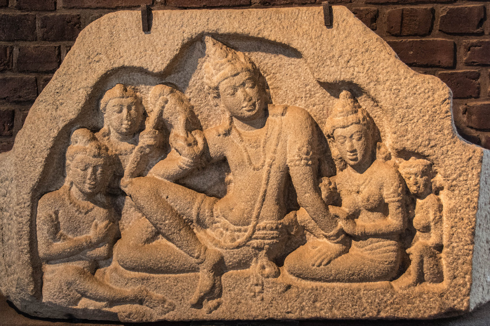

Isurumuniya Lovers
6th Century Gupta style carving.
The woman, seated on the man's lap,lifts
a warning finger,
probably as a manifestation of her coyness; but the man
carries on regardless.
The figures may represent Dutugemunu's son Saliya
and the law caste (Sadol Kula)
maiden Asokamala whom he loved.It's known
that he gave up the throne for her.
The Lovers in the sculptured plaque are
King Kuvera Vaisrawana (Elder brother of Rawana)
and his Queen Kuni.
"
style="width:100%" onmouseover="myFunction(this);" >